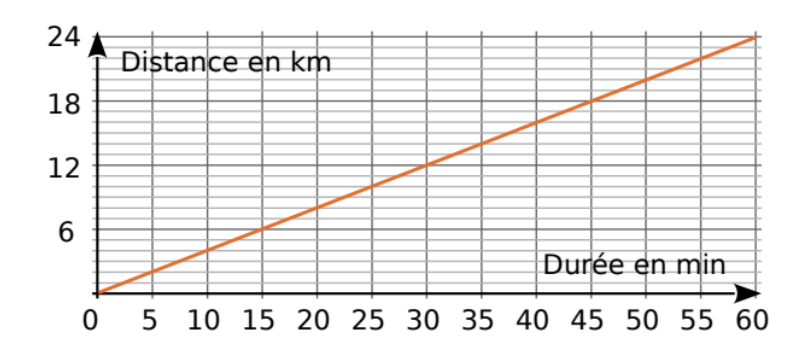

Tableaux de proportionnalité, graphiques et pourcentages
Sur le graphique, on a représenté la distance parcourue par un cycliste en fonction de la durée de son trajet (le graphique passe par l'origine et est une droite).
a. Complète le tableau à l'aide du graphique (le cycliste parcourt 6 km en 10 minutes) :

| Durée (min) | 10 | 20 | 35 | 60 | |||
|---|---|---|---|---|---|---|---|
| Distance (km) | 12 | 20 | 22 |
b. Ce tableau représente-t-il une situation de proportionnalité ? Justifie.
a. Le cycliste parcourt 6 km en 10 min → coefficient = 0,6 km/min
| Durée (min) | 10 | 20 | 35 | 60 | 20 | 33 | 37 |
|---|---|---|---|---|---|---|---|
| Distance (km) | 6 | 12 | 21 | 36 | 12 | 20 | 22 |
Lecture inverse du graphique : 12 km → 20 min ; 20 km → 33 min ; 22 km → 37 min (valeurs approchées lues sur le graphique).
b. Oui, c'est une situation de proportionnalité : le rapport distance ÷ durée est constant (= 0,6 pour toutes les colonnes). Le graphique est une droite passant par l'origine.
Complète les tableaux de proportionnalité.
Tableau 1 (coefficient × 7) :
| 5 | 8 | 9 | |
| 70 |
Tableau 2 (coefficient × 1,5) :
| 4 | 7 | 12 | |
| 15 |
Tableau 3 — Trouve le coefficient : ×
| 6 | 8 | 10,5 | |
| 18 | 32 |
Tableau 4 — Trouve le coefficient : ×
| 4 | 5,5 | 7,2 | |
| 2,4 | 3,9 |
Tableau 1 (×7) :
| 5 | 8 | 9 | 10 |
| 35 | 56 | 63 | 70 |
(10 = 70÷7 ; 35 = 5×7 ; 56 = 8×7 ; 63 = 9×7)
Tableau 2 (×1,5) :
| 4 | 7 | 10 | 12 |
| 6 | 10,5 | 15 | 18 |
(10 = 15÷1,5 ; 6 = 4×1,5 ; 10,5 = 7×1,5 ; 18 = 12×1,5)
Tableau 3 (×4) : coefficient = 32÷8 = 4
| 4,5 | 6 | 8 | 10,5 |
| 18 | 24 | 32 | 42 |
Tableau 4 (×0,6) : coefficient = 2,4÷4 = 0,6
| 4 | 5,5 | 6,5 | 7,2 |
| 2,4 | 3,3 | 3,9 | 4,32 |
Ali a filmé 119 520 images à raison de 24 images par seconde, puis il a filmé encore pendant 54 minutes. Combien de temps, en heures et minutes, a-t-il filmé au total ?
119 520 images ÷ 24 images/s = 4 980 secondes
4 980 s ÷ 60 = 83 minutes
Total = 83 + 54 = 137 minutes = 2 h 17 min
Le carat est une mesure de pureté : 1 carat = 1/24 de la masse. Par ex. de l'or à 15 carats → 15 g d'or pur dans 24 g d'alliage.
a. Complète le tableau (% arrondi au dixième) :
| Carat | 24 | 22 | 20 | 18 | 14 | 10 | 9 |
|---|---|---|---|---|---|---|---|
| % d'or | 100 |
b. Poids d'or pour un bracelet de 22 carats pesant 6,6 g (au centième) :
c. Poids d'or pour un collier de 9 carats pesant 2,8 g :
d. Un bijou de 60 g contient 45 g d'or. Quel est son nombre de carats ?
a. % = carat ÷ 24 × 100
| Carat | 24 | 22 | 20 | 18 | 14 | 10 | 9 |
|---|---|---|---|---|---|---|---|
| % d'or | 100 | 91,7 | 83,3 | 75 | 58,3 | 41,7 | 37,5 |
b. 6,6 × 22/24 = 6,6 × 0,9167 ≈ 6,05 g
c. 2,8 × 9/24 = 2,8 × 0,375 = 1,05 g
d. 45/60 × 24 = 0,75 × 24 = 18 carats